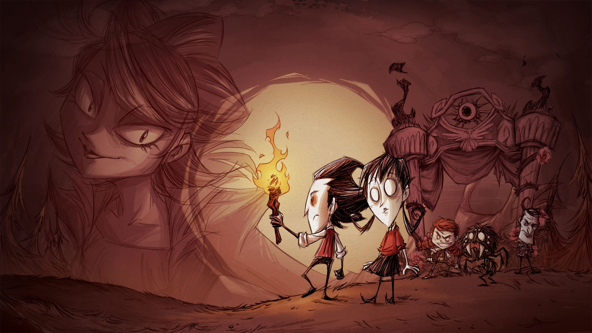

Prostor
Prostor
Prostředí je procedurálně generované a reaguje na sezónní změny, denní/noční cykly, a různé katastrofy, což činí hru dynamickou a nepředvídatelnou. Roční období přinášejí extrémní změny, jako jsou zimní mrazy nebo letní vedra, a systém prostředí do hry přidává náročné překážky, které vyžadují strategické plánování.

Interakce
V Don't Starve není kladen důraz na vnímání prostředí z pohledu jiných entit, protože chybí systém hráčových interakcí s dalšími hráči či postavami s individuálními pohledy na okolí.